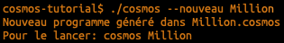
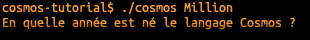
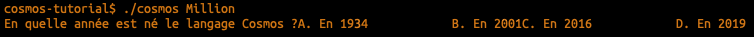
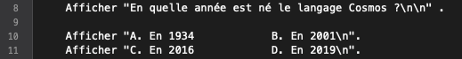

Suite au précédent épisode, il est temps d'en découvrir un peu plus sur la programmation en reprenant un jeu de questions / réponses à l'image de Qui veut gagner des millions.
Objectifs
- Interagir avec l'utilisateur
- S'adapter au comportement de l'utilisateur
Si tu gagnais un million, que ferais-tu ?
Pour commencer, on va poser une question au joueur.
Créer un nouveau programme
Pour rappel, on créée un nouveau programme avec la commande suivante:

Afficher la question
Pour afficher une question, il suffit d'éditer le fichier Million.cosmos et d'y ajouter:

Pour vérifier si cela fonctionne, on peut lancer le programme:

Ajouter les propositions
Dans le jeu original, on propose plusieurs possibilités et on pourrait s'inspirer de la question pour ajouter le code suivant:

En testant le programme, on s'aperçoit que le résultat n'est pas satisfaisant:

Retour de chariot
En fait, on doit indiquer à l'ordinateur si on veut des retours à la ligne ou pas.
En l'occurrence, on en veut plusieurs !
Pour indiquer un retour à la ligne, on utilise la notation \n, ce qui dans notre exemple donnerait:


Maintenant que la question est posée,
Pour terminer, un petit quizz facilitera la mémorisation à long terme des éléments pratiqués dans cet atelier.
lol